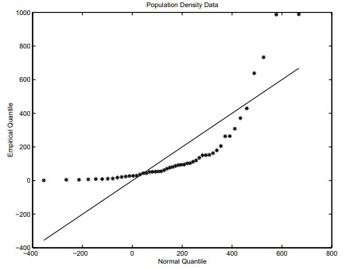
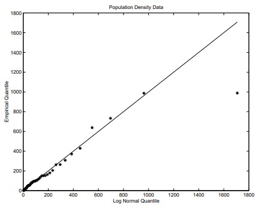
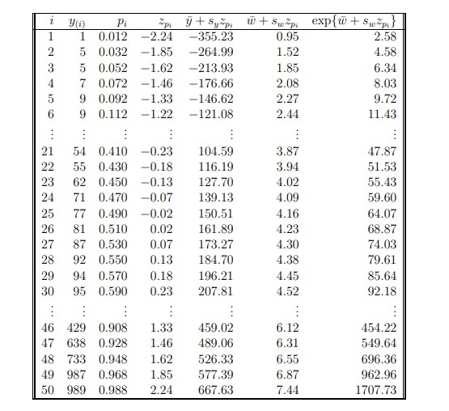

7 자료의 정리와 기술
7.1 도수분포
범주형 확률변수에 대해서는 분할표(도수표), 셀 도수, 주변 분포를 사용한다.
범주형 확률변수와 이산형 확률변수에 대해서는 막대그래프를 사용한다.
7.2 연속형 변수의 자료
연속형 확률변수에 대해서는 줄기-잎 그림을 사용할 수 있다.
연속형 확률변수에 대해서는 도수분포와 히스토그램을 사용할 수 있다. 계급 구간의 폭이 같든 같지 않든, 넓이는 도수에 비례해야 한다.
쌍을 이룬 연속형 확률변수에 대해서는 산점도를 사용한다.
통계량: 표본의 수치적 특성이다. \(\textbf{통계량은 확률변수이다}\).
7.3 순서통계량
순서통계량은 표본값들을 크기순으로 정렬한 값이다.
- 관례적으로 \(i\)번째 순서통계량은 \(X_{(i)}\)로 나타내며, 여기서 \(X_{(1)} \le X_{(2)} \le X_{(3)} \le \cdots \le X_{(n)}\)이다.
표본 중앙값: \(50\)번째 백분위수.
사분위수: \(Q^1\)은 \(25\)번째, \(Q^2\)는 \(50\)번째, \(Q^3\)는 \(75\)번째 백분위수이다.
사분위범위: \(Q^3-Q^1\).
범위: \(X_{(n)}-X_{(1)}\).
중간범위: \((X_{(n)}+X_{(1)})/2\).
중간힌지: \((Q^1+Q^3)/2\).
다섯 수치 요약: \(X_{(1)}, Q_1, Q_2, Q_3, X_{(n)}\).
분위수: 크기가 \(n\)인 자료집합에서 분위수는 순서통계량 \(X_{(1)}, \ldots, X_{(n)}\)이다.
- \(i\)번째 분위수는 \(100p_i\)번째 백분위수이며, 여기서 \(p_i=(i-3/8)/(n+1/4)\)이다.
- 백분위수는 모든 \(i\)에 대해 \(p_i\in(0,1)\)이 되도록 정의됨에 유의하자.
- \(n\)이 크면 \(p_i\approx i/n\)이다.
Q-Q 그림: 두 분포에서 얻은 분위수들을 비교하는 산점도이다.
- 두 분포가 같다면 산점도는 45도 각도의 직선 위에 놓인 점들의 형태를 보여야 한다.
한 가지 응용은 경험적 분위수를 이론분포의 분위수와 비교하여 그리는 것이다.
- 이것을 확률그림이라고 한다.
- 예를 들어 자료가 cdf \(F\)를 갖는 어떤 분포에서 표본추출되었다고 믿는다고 하자.
- 그러면 확률그림은 \(i=1,\ldots,n\)에 대해 \(F^{-1}(p_i)\)를 \(X_{(i)}\)에 대해 그려서 얻는다.
예를 들어 자료가 정규분포에서 나왔을 가능성이 있는지를 시각화하려면 경험적 분위수를 정규 분위수 \(\mu+\sigma\Phi^{-1}(p_i)\)와 비교하여 그릴 수 있다.
- 예를 들면 다음과 같다.
아래는 자료의 분위수를 정규분포의 분위수 및 로그정규분포의 분위수와 비교한 Q-Q 그림이다.
- 표에서 변수 \(\ln(y)\)는 \(w\)로 표시되어 있다.
- 정규분포와 로그정규분포의 분위수는 각각 다음과 같다.
\[ \bar{y} + s_yz+{p_i}\quad\text{그리고}\quad \exp\left \{\bar{w}+s_wz_{p_i} \right \} \]
각각에 해당하며, 여기서 \(z_{p_i}=\Phi^{-1}(p_i)\)는 표준정규분포의 \(100p_i\)번째 백분위수이다.
- 가장 작은 세 값은 알래스카, 몬태나, 와이오밍에 해당한다. 46–50번째 값은 각각 메릴랜드, 코네티컷, 매사추세츠, 뉴 저지, 로드아일랜드에 해당한다.



7.4 자료분석
확률변수와 실현값:
- \(X_1, X_2, \ldots, X_n\)이 어떤 모집단에서 얻은 확률표본이라고 하자.
- 그러면 \(X_i\)는 해당 모집단에 따라 분포가 결정되는 확률변수이다.
- 또한 \(X_1, X_2, \ldots, X_n\)의 분포는 교환가능하다.
- 확률표본의 실현값은 소문자로 나타내기로 한다.
- 즉, \(x_1, x_2, \ldots, x_n\)은 확률표본의 한 실현값이다.
이상치: 자료 대부분에서 멀리 떨어져 있는 관측값이다.
확률표본: 단순확률표본은 크기가 \(n\)인 가능한 모든 표본이 동일한 선택 확률을 갖도록 모집단에서 추출한 표본이다.
- 이는 각 단위가 선택될 확률이 같다는 것을 의미하지만, 각 단위의 선택확률이 같도록 추출한 표본이 반드시 단순확률표본인 것은 아님에 유의하자.
\(X\) 및/또는 \(Y\)의 변환은 비선형 관계를 선형 관계로 바꾸는 데 유용할 수 있다.
7.5 표본평균
\(\bar{X}=\frac{1}{n}\sum_{i=1}^nX_i\)는 확률변수인 반면, \(\bar{x}=\frac{1}{n}\sum_{i=1}^nx_i\)는 실현값이다.
확률 1로 \(\sum_{i=1}^n(X_i-\bar{X})=0\)이고, \(\sum_{i=1}^n(x_i-\bar{x})=0\)이다.
\(X_1,\ldots,X_n\)이 평균 \(\mu\), 분산 \(\sigma^2\)를 갖는 크기 \(N\)의 유한모집단에서 비복원추출한 확률표본이면,
\[ E(\bar{X})=\mu\quad\text{그리고}\quad \ Var(\bar{X})=\frac{\sigma^2}{n}\Bigg(1-\frac{(n-1)}{(N-1)}\Bigg)\]
- \(X_1,\ldots,X_n\)이 평균 \(\mu\), 분산 \(\sigma^2\)를 갖는 무한모집단에서 복원 또는 비복원으로 추출되었거나, 유한모집단에서 복원추출된 확률표본이면,
\[ E(\bar{X})=\mu\quad\text{그리고}\quad Var(\bar{X})=\frac{\sigma^2}{n} \]
7.6 산포의 측도
표본분산: \(S^2=\frac{1}{n-1}\sum_{i=1}^n(X_i-\bar{X})^2\)는 확률변수인 반면, \(s^2=\frac{1}{n-1}\sum_{i=1}^n(x_i-\bar{x})^2\)는 실현값이다.
\(X_1,\ldots,X_n\)이 평균 \(\mu_X\)와 분산 \(\sigma_X^2\)를 갖는 무한모집단에서 복원 또는 비복원으로 추출되었거나, 유한모집단에서 복원추출된 확률표본이면,
\[ E(S^2_X)=\sigma^2_X \]
- 증명: 먼저 \((X_i-\bar{X})\)를 다음과 같이 쓴다.
\[ (X_i-\bar{X})^2=X_i^2-2X_i\bar{X}+\bar{X}^2 \]
- 따라서
\[ S^2_X=\frac{1}{n-1}\Bigg[\sum_{i=1}^nX_i^2-n\bar{X}^2\Bigg] \]
\(Y\)가 평균 \(\mu_Y\)와 분산 \(\sigma_Y^2\)를 갖는 확률변수이면 \(E(Y^2)=\mu_Y^2+\sigma_Y^2\)임을 상기하자.
이 응용에서 \(E(\bar{X}^2)=\mu_X^2+\sigma_X^2/n\)이다.
따라서
\[ E(S^2_X)\frac{1}{n-1}\Bigg[n(\mu^2_X+\sigma^2_X)-n\bigg(\mu^2_X+\frac{\sigma^2_X}{n}\bigg)\Bigg]=\sigma^2_X \]
- \(Y_1,\ldots,Y_n\)이 표본평균 \(\bar{Y}\)와 표본분산 \(S_Y^2\)를 갖는 표본이라고 하자.
- \(i=1,\ldots,n\)에 대해 \(X_i=a+bY_i\)로 \(X_i\)를 정의한다.
- 그러면 \(X_1,\ldots,X_n\)의 표본평균과 표본분산은 다음과 같다.
\[ \bar{X}=a+b\bar{Y}\quad\text{그리고}\quad S^2_X=b^2S^2_Y \]
- 증명:
\[ \begin{align} \bar{X}&=\frac{1}{n}\sum_{i=1}^nX_i=\frac{1}{n}\sum_{i=1}^n(a+b{Y}_i)\\ &=\frac{1}{n}\bigg(na+b\sum_{i=1}^nY_i\bigg)=a+b\bar{Y} \end{align} \]
또한,
\[ \begin{align} S^2_X&=\frac{1}{n-1}\sum[X_i-\bar{X}]^2=\frac{1}{n-1}[a+bY_i-(a+b\bar{Y})]^2\\ &=\frac{1}{n-1}\sum[bY_i-b\bar{Y}]^2=\frac{1}{n-1}b^2\sum[Y_i-\bar{Y}]^2=b^2S^2_Y \end{align} \]
이 결과는 실현값 \(y_1,\ldots,y_n\)에 대해서도 성립한다.
\(MAD=n^{-1}\sum_{i=1}^n|X_i-\bar{X}|\)로 정의할 수 있으며, 더 일반적으로 \(M\)이 표본 중앙값일 때 \(MAD=n^{-1}\sum_{i=1}^n|X_i-M|\)으로 정의한다.
결과: \(g(a)=\sum_{i=1}^n|X_i-a|\)라고 하자. 그러면 \(a\)에 대해 \(g(a)\)를 최소화하는 값은 표본 중앙값이다.
증명: 전략은 \(g(a)\)를 \(a\)에 대해 미분하고, 그 도함수를 0으로 둔 뒤 \(a\)에 대해 푸는 것이다.
- 먼저 \(X_i=a\)인 항은 \(g(a)\)에 아무것도 기여하지 않으므로 무시할 수 있음에 유의하자.
- \(X_i\neq a\)이면 다음과 같다.
\[ \begin{align} \frac{d}{da}|X_i-a|&=\frac{d}{da}\sqrt{(X_i-a)^2}\\ &=\frac{1}{2}[(X_i-a)^2]^{-\frac{1}{2}}2(X_i-a)^2(-1)=-\frac{X_i-a}{|X_i-a|}\\ &=\begin{cases} -1& \text{만약 } X_i>a; \\ 1& \text{만약 } X_i<a. \end{cases} \end{align} \]
- 따라서
\[ \begin{align} \frac{d}{da}g(a) &= -\,\sum_{i=1}^n I(X_i>a) + \sum_{i=1}^n I(X_i<a). \end{align} \]
- 도함수를 0으로 두면 \(a\)보다 작은 \(X\)의 개수와 \(a\)보다 큰 \(X\)의 개수가 같아야 한다. 따라서 \(a\)는 표본 중앙값이어야 한다.
7.7 상관
\((X_1,Y_1),(X_2,Y_2),\ldots,(X_n,Y_n)\)이 평균 \((\mu_X,\mu_Y)\), 분산 \((\sigma_X^2,\sigma_Y^2)\), 공분산 \(\sigma_{X,Y}\)를 갖는 모집단에서 얻은 순서쌍의 확률표본이라고 하자.
\(X\)와 \(Y\) 사이의 표본공분산은 다음과 같다.
\[ S_{X,Y}\overset{def}{=}\frac{1}{n-1}\sum(X_i-\bar{X})(Y_i-\bar{Y}) \]
- \(S_{X,Y}\)에 대한 식은 다음과 같이 쓸 수 있다.
\[ S_{X,Y}=\frac{1}{n-1}\sum\bigg[X_iY_i-n\bar{X}\bar{Y}\bigg] \]
- 증명: \(X\)와 \(Y\)의 편차를 곱하면 다음을 얻는다.
\[ \begin{align} S_{X,Y}&=\frac{1}{n-1}\sum(X_iY_i-X_i\bar{Y}-\bar{X}Y_i+\bar{X}\bar{Y})\\ &=\frac{1}{n-1}\bigg[\sum_{i=1}^n[X_iY_i-\bar{Y}\sum_{i=1}^nX_i-\bar{X}\sum_{i=1}^nY_i+n\bar{X}\bar{Y}\bigg]\\ &=\frac{1}{n-1}\bigg[\sum_{i=1}^nX_iY_i-n\bar{Y}\bar{X}-n\bar{X}\bar{Y}+n\bar{X}\bar{Y}\bigg]\\ &=\frac{1}{n-1}\bigg[\sum_{i=1}^nX_iY_i-n\bar{X}\bar{Y}\bigg] \end{align} \]
- 모집단이 무한하거나 표본이 복원추출되면 다음이 성립한다.
\[ E(S_{X,Y} ) = \sigma_{X,Y} \]
- 증명: 먼저 \(\sigma_{X,Y}=E(X_iY_i)-\mu_X\mu_Y\)이고, 독립성에 의해 \(i\neq j\)이면 \(E(X_iY_j)=\mu_X\mu_Y\)임에 유의하자. 또한
\[ \begin{align} \bar{X}\bar{Y}&=\frac{1}{n^2}\bigg(\sum_{i=1}^n\ X_i\bigg)\bigg(\sum_{j=1}^n Y_j\bigg)=\frac{1}{n^2}\sum_{i=1}^n\sum_{j=1}^n X_iY_j\\ &=\frac{1}{n^2}\bigg[\sum_{i=1}^n\sum_{j=1}^n X_iY_j+\sum_{i=1}^n\sum_{i\neq j} X_iY_j\bigg] \end{align} \]
- 따라서
\[ \begin{align} E(S_{X,Y})&=\frac{1}{n-1}E\bigg[\sum_{i=1}^nX_iY_i-\frac{1}{n}\sum_{i=1}^nX_iY_i-\frac{1}{n}\sum_{i\neq j}X_iY_j\bigg]\\ &=\frac{1}{n-1}E\bigg[\bigg(1-\frac{1}{n}\bigg)\sum_{i=1}^nX_iY_i-\frac{1}{n}\sum_{i\neq j}X_iY_j\bigg]\\ &=\frac{1}{n-1}[(n-1)E(X_iY_i)-(n-1)E(X_iY_j)]\\ &=E(X_iY_i)-E(X_iY_j)=E(X_iY_i)-\mu_X\mu_Y = \sigma_{X,Y} \end{align} \]
- 표본상관계수:
\[ r_{X,Y}\overset{def}{=}\frac{S_{X,Y}}{\sqrt{S^2_XS^2_Y}} \]
- \(i=1,\ldots,n\)에 대해 \(U_i=a+bX_i\), \(V_i=c+dY_i\)이면 \(U\)와 \(V\) 사이의 표본공분산은 다음과 같다.
\[ S_{U,V}=bdS_{X,Y} \]
- 증명: 표본공분산의 정의에 의해
\[ \begin{align} S_{U,V}&=\frac{1}{n-1}\sum_{i=1}^n(U_i-\bar{U})(V_i-\bar{V})\\ &=\frac{1}{n-1}\sum_{i=1}^n[a+bX_i-(a+b\bar{X})]+[c+dY_i-(c+d\bar{Y})]\\ &=\frac{1}{n-1}\sum_{i=1}^nbd(X_i-\bar{X})(Y_i-\bar{Y})=bdS_{X,Y} \end{align} \]
- \(i=1,\ldots,n\)에 대해 \(U_i=a+bX_i\), \(V_i=c+dY_i\)이면 \(U\)와 \(V\) 사이의 표본상관은 다음과 같다.
\[ r_{U,V}=\mathrm{sign}(bd)r_{X,Y} \]
- 증명: 표본상관의 정의에 의해
\[ \begin{align} r_{U,V}=\frac{S_{U,V}}{\sqrt{S^2_US^2_V}}&=\frac{bdS_{X,Y}}{\sqrt{b^2S^2_Xd^2S^2_Y}}\\ &=\frac{bd}{|bd|}\frac{S_{X,Y}}{S^2_XS^2_Y}\\ &=\mathrm{sign}(bd)r_{X,Y} \end{align} \]